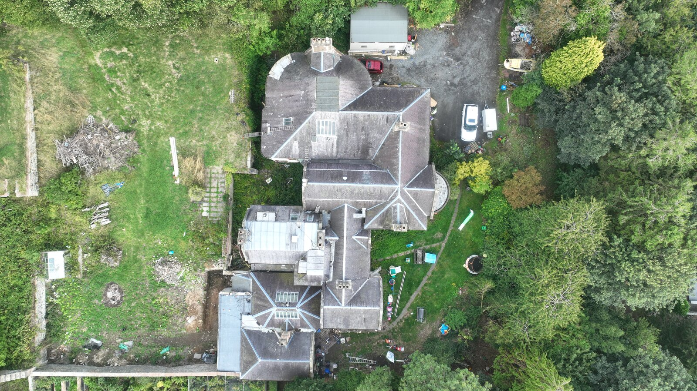
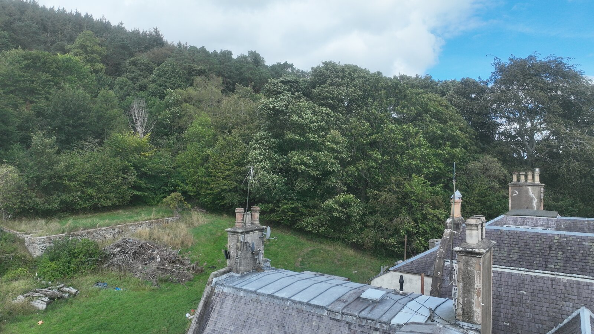

How Local Terrain Shapes HF Reception at IO85LO
Every HF antenna is subject to a horizon — the angle below which the surrounding terrain blocks incoming signals. Most operators know the far field: the hill to the north, the ridge to the east. What is much harder to know is the near field. The trees in the garden, the wall at the end of the field, the house itself. At 30 metres of posting, the best freely available terrain model — Copernicus GLO-30 — cannot resolve anything inside 200 metres of your antenna. For most rural stations, that exclusion zone is where the obstruction lives.
This survey started as a straightforward measurement exercise: characterise the receive performance of a long wire at a Scottish Borders QTH using 37.4 hours of WSPR decode data. It ended with a visit from a 50 cm LiDAR dataset that rewrote half the conclusions.
What follows is the story in two acts.
| Callsign / status | G/SWL/EH43 — SWL, amateur licence in progress, receive only |
| Locator | IO85LO · 55.6244 N, 3.0162 W |
| Location | Scottish Borders, near West Linton |
| Ground | ~162 m AMSL, on a shoulder with the Pentland Hills rising to the north |
| Receiver | Icom IC-7610 → WSJT-X (WSPR, receive only) |
| Antenna | M0CVO LW-40 — 40.56 m end-fed long wire, 9:1 unun |
| Antenna axis | 027.8° / 207.8° (NNE–SSW), confirmed by GPS to 1.2° |
| Antenna height | ~9 m AGL (7–11 m; chimney height not yet taped — the one free parameter) |
| Survey window | 2026-08-28 23:40 → 2026-08-30 13:06 UTC — 37.4 hours |
| Total decodes | 3,874 (3,817 geocoded; 57 type-2 messages carry no position) |
| WSPRnet upload | Off — all data from local ALL_WSPR.TXT only |
The site is roughly a hectare of mature woodland. The antenna sits in a 33 × 33 m clearing inside it, with the tree line about 17 m away broadside.

Before running the survey I did what anyone would do: downloaded the best available elevation data and computed a 360° horizon profile. Copernicus GLO-30 is free, global, 30 m posting, published by ESA on AWS open data with no account required. The script drops a 50 km radius of tiles around the observer's coordinates and ray-casts outward in 0.5° steps.
The result looked reasonable. Median horizon: 6.2°. The profile ranged from 1.6° to the west (open fell country) to 15.5° at north-north-east (the Pentland Hills rising behind). Nothing alarming. Plenty of sky available for the DX angles that matter on HF.
I ran the survey and then did the right thing: checked the model against the data.
The horizon profile assigns a minimum arrival angle to every compass bearing. For each decoded WSPR signal I have a transmitter location, and from that I can compute the bearing from IO85LO and the takeoff angle required for a single F2 hop over that path. If the model is correct, signals should only arrive from directions and elevations where the sky is open.
Result: 99.0% of the 3,817 geocoded decodes arrived above their own modelled skyline. The fraction arriving within 2° of the skyline rose monotonically with frequency — from 0% on 160 m to 7% on 20 m — which is exactly what you expect as higher-frequency paths require lower takeoff angles.
The model had passed. Or so it appeared.
Here is what the survey actually captured, sorted by decode rate:
| Band | RX slots | Decodes | Decodes / slot | RX time |
|---|---|---|---|---|
| 40 m | 205 | 1,541 | 7.52 | 410 min |
| 80 m | 220 | 1,299 | 5.90 | 440 min |
| 30 m | 193 | 722 | 3.74 | 386 min |
| 20 m | 197 | 173 | 0.88 | 394 min |
| 160 m | 213 | 139 | 0.65 | 426 min |
| 17 m | 27 | 0 | 0.00 | 54 min |
| 10 m | 44 | 0 | 0.00 | 88 min |
| 15 m | 2 | 0 | 0.00 | 4 min |
| 12 m | 1 | 0 | 0.00 | 2 min |
Each slot is a 2-minute WSPR receive window. The band-hop schedule is recorded in WSPR_history.txt and makes decode counts directly comparable across bands.
40 m is dominant. 80 m is strong. 20 m is present but faint. 17 m heard nothing at all.
The obvious interpretation is that propagation favoured the low bands on those nights. August often does. But before accepting that, I ran the peer comparison.
Four other WSPR receivers operate in IO85 within about 20 km of this QTH: GM4DTH, GM4DIJ, GM4JRT, GM0DHD. Their data is freely available via wspr.live's ClickHouse endpoint — same hours, same bands, no account needed. I pulled unique transmitter callsigns heard per band over the identical window:
| Station | 160 m | 80 m | 40 m | 30 m | 20 m | 17 m |
|---|---|---|---|---|---|---|
| This station (EH43) | 19 | 122 | 192 | 112 | 40 | 0 |
| GM4DTH | 22 | 57 | 189 | 122 | 194 | 36 |
| GM4DIJ | — | — | 93 | 63 | 129 | 34 |
| GM4JRT | 4 | 4 | 87 | 90 | 145 | 24 |
| GM0DHD | — | — | 68 | 261 | 517 | 46 |
Unique TX callsigns heard per band during the survey window. Normalise each station to its own 40 m result to remove differences in dwell time, receiver sensitivity and band activity.
Normalising to 40 m (to cancel dwell time, receiver sensitivity, and band activity), every peer station hears more unique callsigns on 20 m than on 40 m. Their 20 m / 40 m ratios run from 1.03 (GM4DTH — roughly equal) to 7.60 (GM0DHD — 20 m dominant). This station's ratio is 0.21 — a shortfall of roughly 7× on near-identical dwell time.
This station is best of the five on 40 m, and roughly double the only comparator on 80 m. It is not a weak station. It is a lopsided one. The low bands work; the high bands don't. And on the same nights, 20 m was clearly open — the peers were active.
Here is what Copernicus GLO-30 cannot do: it cannot resolve anything inside about 200 m of the observer. The 30 m posting forces the ray-cast to start at that distance — any closer and the angle geometry becomes unstable. The script discards the near field and trusts that 200 m is close enough to ground level.
At most rural sites that assumption is fine. The garden, the driveway, the field next door — none of those usually grow high enough to matter. But this QTH is a wooded hectare. The antenna sits in a clearing, and the tree line is roughly 17 m away. Everything that blocks the sky at low elevation angles is packed into the 200 m exclusion zone the model cannot see.
The model validated against 3,817 decodes at 99.0%. It was right about what got through. It had no way to test what didn't.
Scotland publishes LiDAR free via AWS open data — bucket srsp-open-data, region eu-west-2, Open Government Licence v3. Both a DSM (surface, includes canopy) and a DTM (bare earth) at 50 cm posting — 60× the resolution of Copernicus, no account, no key.
This QTH falls in National Grid square NT33NE, covered by Phase 3. The tiles are ~390 MB each, but a cropped 1.2 km window is 9–14 MB. Cropped with rasterio, merged with the Copernicus far field at 600 m, re-run through the same ray-cast.
The results were not subtle.
| Sector | Copernicus (terrain only) | True — at 9 m | True — at 18 m | Limited by |
|---|---|---|---|---|
| N | 10.7° | 30.0° | 18.2° | Trees |
| NE | 10.7° | 21.4° | 16.2° | Trees |
| E | 3.1° | 17.9° | 7.6° | Trees |
| SE | 5.5° | 10.3° | 5.6° | Trees |
| S | 6.4° | 6.4° | 6.4° | Far terrain |
| SW | 7.3° | 7.3° | 7.3° | Far terrain |
| W | 3.5° | 3.5° | 3.5° | Far terrain — best sector |
| NW | 8.3° | 16.8° | 10.0° | Trees |
| Median | 6.2° | 12.2° | 7.4° |
horizon_merged_9m.csv — LiDAR inside 600 m spliced with Copernicus beyond, taking the higher value at each 0.5° step.
Due north: 30.0° actual versus 10.7° modelled. The Copernicus model was right in exactly the sectors where nothing grows — south through south-west — and wrong by 10–19° everywhere else.
The canopy height model (CHM = DSM − DTM) maps every tree on the plot at 50 cm resolution. The picture is a 33 × 33 m clearing surrounded on three sides by mature woodland.
| Sector (20–120 m from antenna) | Mean height | p90 height | Maximum |
|---|---|---|---|
| N | 12.3 m | 20.4 m | 23.3 m |
| NE | 11.5 m | 19.9 m | 25.6 m |
| E | 10.0 m | 19.0 m | 28.7 m |
| SE | 9.3 m | 18.2 m | 21.5 m |
| S | 8.1 m | 17.4 m | 21.1 m |
| SW | 7.5 m | 17.8 m | 22.3 m |
| W | 2.5 m | 8.3 m | 20.8 m |
| NW | 4.0 m | 14.8 m | 22.1 m |
p90 = the height exceeded by only 10% of the canopy surface in that sector. Trees at 20 m p90 block low-elevation signals from north and north-east as effectively as a solid wall.
The wire clears to the west — 3.5° regardless of antenna height, because that direction is open fell country rather than woodland. The wire is caged on north, north-east, and east. The south and south-west are somewhere between: tree-limited at close range but yielding to distant terrain as the antenna rises.

Here is the insight that makes the whole picture click.
Arrival angle is set by path length, not by band. A single F2 hop follows a curved path through the ionosphere. The geometry fixes the takeoff angle at the transmitter and the arrival angle at the receiver based on ground distance alone:
| Ground distance | Arrival angle |
|---|---|
| 800 km | 34.4° |
| 1,500 km | 18.0° |
| 2,000 km | 11.8° |
| 3,000 km | 4.3° |
The tree line toward continental Europe (around 120° bearing) is 17.7° at the current 9 m antenna height. That is the cutoff. Signals from inside about 1,500 km arrive steeply enough to clear it. Signals from beyond 1,500 km do not.
This looks like a band effect because of how the bands use the ionosphere. 80 m works at 800 km — single-hop, 34°, sails over the trees. 20 m skips to 2,000 km and beyond — 12° or lower, hits the tree wall. But the root cause is path length. The trees do not care what frequency the signal is.
Confirmed on 2026-08-30: clear 80 m SSB from Denmark and northern Germany (780–1,120 km, arriving 25–35°) on the same evening that 20 m was empty. The WSPR data agrees — for the 075–135° arc, 80 m gave 469 decodes at a median arrival of 32.4°; 20 m gave 43 at 14.4°.
Height is the single most effective lever available. Raising the antenna clears the trees and lowers the ground-reflection lobe at the same time. The merged horizon at each candidate height:
| Antenna AGL | 80 m | 40 m | 30 m | 20 m | 17 m |
|---|---|---|---|---|---|
| 9 m — as built | 82% | 68% | 57% | 48% | 46% |
| 12 m | 89% | 75% | 65% | 53% | 51% |
| 15 m | 94% | 84% | 73% | 60% | 57% |
| 18 m — design target | 97% | 89% | 81% | 68% | 64% |
| 21 m | 99% | 93% | 87% | 75% | 71% |
| 24 m | 100% | 96% | 92% | 81% | 77% |
Fraction of each band's DX window — the range of takeoff angles that carry useful paths — that survives the terrain. Derived from horizon_merged_{h}m.csv at each height.
At 9 m, 80 m keeps 82% of its window and 20 m keeps 48%. That ratio — worse on 20 m than on 80 m — is exactly the lopsidedness the peer benchmark revealed, and the terrain-only Copernicus model said neither band was affected at all.
At 18 m, 20 m recovers to 68%. The improvement stalls above 18 m because beyond that height the far-field Pentland Hills replace the trees as the binding constraint — and the Pentland Hills cannot be chopped down. Below 18 m you are fighting a problem you can fix; above it, one you cannot.
The direction matters too. Height only helps where trees are the limit:
| Target | At 9 m | At 18 m |
|---|---|---|
| Japan (029°) | 23.4° | 17.9° |
| Scandinavia (060°) | 21.3° | 14.6° |
| Central Europe (120°) | 17.7° | 7.2° |
| Mediterranean (138°) | 6.6° | 5.0° |
| Eastern USA (283°) | 5.3° | 5.3° |
| Caribbean (258°) | 2.9° | 2.9° |
Raising from 9 m to 18 m opens Europe, Scandinavia and Japan. The Americas and the Mediterranean are terrain-limited at every height tested — the Pentland Hills and the south-west horizon are in the way, and height does not move them.
In order:
UploadSpots=false — all data here is from ALL_WSPR.TXT only, and nothing from this station has ever appeared on WSPRnet.Everything used in this analysis is free and open. LiDAR under Open Government Licence v3; WSPR data created by the survey with no upstream restrictions.
| File | What |
|---|---|
wspr_spots.csv |
3,874 decoded WSPR spots — geocoded, bearing, distance, SNR |
wspr_band_slots.csv |
Band-by-band slot and decode summary |
horizon_merged_9m.csv |
Definitive horizon at 9 m AGL — LiDAR + Copernicus merged |
horizon_merged_18m.csv |
Horizon at 18 m AGL — design target |
wspr_parse.py |
ALL_WSPR.TXT → geocoded CSV |
horizon.py |
DEM tiles + lat/lon → 360° horizon profile |
G/SWL/EH43 · IO85LO · Survey: 2026-08-28/30 · Published 2026-08-31
Same QTH — CWA-1000 trapped dipole on N–S axis.
Contains public sector information licensed under the Open Government Licence v3.0. Scottish Public Sector LiDAR Phase 3, Scottish Government.
Copernicus GLO-30 DSM © ESA / Sinergise, produced from WorldDEM™ © Airbus Defence and Space.